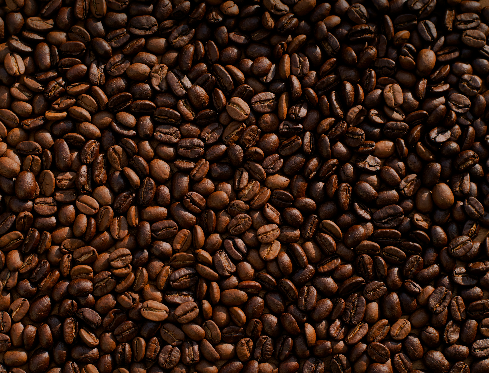

15 minutos⁶
Com o carregador TurboPower™ 68, você garante bateria para o dia todo em apenas 15 minutos⁶.
38 horas
A bateria de 4800 mAh com silício-carbono oferece até 38 horas de autonomia⁷ em um design ultrafino.

Com o carregador TurboPower™ 68, você garante bateria para o dia todo em apenas 15 minutos⁶.
A bateria de 4800 mAh com silício-carbono oferece até 38 horas de autonomia⁷ em um design ultrafino.

Notas sensoriais de chocolate ao leite e avelã. Torra média clara com acidez cítrica agradável e corpo aveludado.
Notas florais marcantes e toque de rapadura. Torra clara que preserva a doçura natural e o aroma complexo do grão.
Notas de frutas amarelas e caramelo intenso. Torra média com doçura elevada e finalização prolongada.
1 Pacote de 250g de café especial por mês + Cartão explicativo com o perfil sensorial do lote.
2 Pacotes de 250g de microlotes diferentes por mês + Brindes exclusivos e frete grátis.
1kg de café em grãos ou moído semanalmente para quem não vive sem um café fresco de altíssima qualidade.
O café especial é composto por grãos 100% Arábica sem defeitos, avaliados pela Specialty Coffee Association (SCA) com nota acima de 80 pontos, oferecendo sabores e aromas naturais sem necessidade de torra queimada.
Recomendamos comprar em grãos e moer imediatamente antes do preparo para preservar todos os óleos essenciais e aromas. No entanto, enviamos moído na espessura ideal para o seu método caso prefira.
As torras do clube ocorrem toda primeira segunda-feira do mês. Os cafés são embalados e despachados em até 24 horas após a torra para garantirmos o máximo de frescor.
O café não estraga rapidamente, mas atinge seu ápice sensorial entre o 7o e o 30o dia após a data da torra estampada no pacote.